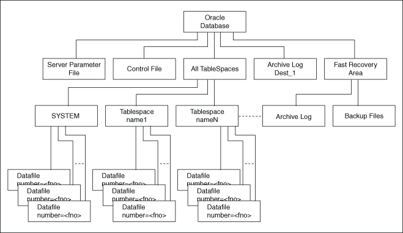

Overview of Windows Firewall
All newer Windows operating systems, by default enable the Windows Firewall to block virtually all TCP network ports to the incoming connections.
As a result, any Oracle products that listen for incoming connections on a TCP port do not receive any of those connection requests, and the clients making those connections report errors.
Depending upon which Oracle products are installed and how they are used, the products require some postinstallation configuration of the Windows Firewall to function on these operating systems.
- About Oracle Executables Requiring Windows Firewall Exceptions
If the Oracle Database executables are in use and accepting connections from a remote client computer, then Oracle recommends that you add them to the Windows Firewall exceptions list to ensure correct operation. - Configuring the Windows Firewall
Oracle recommends configuring the Windows Firewall if the following conditions are true. - Troubleshooting Windows Firewall Exceptions
Perform the following steps to troubleshoot Windows Firewall exceptions.
Parent topic: Postinstallation Configuration Tasks on Windows
About Oracle Executables Requiring Windows Firewall Exceptions
If the Oracle Database executables are in use and accepting connections from a remote client computer, then Oracle recommends that you add them to the Windows Firewall exceptions list to ensure correct operation.
Except as noted, these Oracle executables can be found in the ORACLE_HOME\bin directory.
Note:
If multiple Oracle homes are in use, then you need several firewall exceptions for the same executable: one for each home from which that executable loads.
- Configuring Windows Firewall Exceptions for Successful Connections to Oracle Software
Learn about configuring Windows Firewall exceptions. - Overview of Different Executables Added to the Windows Firewall Exception List
Lists the executables that listen on TCP ports on Windows, along with a brief description of the executable.
Parent topic: Overview of Windows Firewall
Configuring Windows Firewall Exceptions for Successful Connections to Oracle Software
Learn about configuring Windows Firewall exceptions.
You must configure exceptions for the Windows Firewall if your system meets all of the following conditions:
-
Oracle server-side components are installed on a Windows server operating system. The list of components includes Oracle Database, Oracle Grid infrastructure, network listeners, or any web servers or services.
-
The Windows system in question accepts connections from other machines over the network. If no other machines connect to the Windows system to access the Oracle software, then no postinstallation configuration steps are required and the Oracle software functions as expected.
-
The Windows system in question is configured to run the Windows Firewall. If the Windows Firewall is not enabled, then no postinstallation configuration steps are required.
If all the conditions are met, then the Windows Firewall must be configured to allow successful incoming connections to the Oracle software. To enable Oracle software to accept connection requests, Windows Firewall must be configured by either opening up the specific static TCP ports in the firewall or by creating exceptions for specific executables so they can receive the connection requests on any ports they choose. This firewall configuration can be done by one of the following methods:
-
From the Start menu:
-
Click Run and enter firewall.cpl. This opens the Windows Firewall Control Panel applet.
-
Complete one of the following operating system-specific steps to allow a program through the Windows Firewall:
-
On Windows 8, Windows 8.1, Windows Server 2012, or Windows Server 2012 R2 x64, click Allow an app or feature through Windows Firewall. Click Change Settings.
-
On Windows 7 or Windows Server 2008 R2, click Allow a program or feature through Windows Firewall. Click Change Settings, Allow Another Program.
-
On Windows Server 2008, click Allow a program through Windows Firewall.
-
-
On the Exceptions tab, click Add Program to create exceptions for the Oracle software.
-
-
From the command prompt, use the
netshfirewall add...command.
When Windows notifies you that a foreground application is attempting to listen on a port, and gives you the opportunity to create an exception for that executable, if you choose to create the exception in this way, then the effect is the same as creating an exception for the executable either through Control Panel or from the command line.
Overview of Different Executables Added to the Windows Firewall Exception List
Lists the executables that listen on TCP ports on Windows, along with a brief description of the executable.
Oracle recommends that these executables (if in use and accepting connections from a remote, client computer) be added to the exceptions list for the Windows Firewall to ensure correct operation. In addition, if multiple Oracle homes are in use, then create firewall exceptions for the same executable, for example, oracle.exe, multiple times, once for each Oracle home from which that executable loads.
- About Firewall Exceptions for Oracle Database
For a basic database operation and connectivity from remote clients (SQL*Plus, OCI, ODBC, OLE DB applications, and so on), add the following executables to the Windows Firewall exception list: - About Firewall Exceptions for Oracle Database Examples
After installing Oracle Database Examples, add the following executables to the Windows Firewall exception list: - About Firewall Exceptions for Oracle Gateways
If your Oracle database interacts with non-Oracle software through a gateway, then you must add the gateway executable to the Windows Firewall exception list. - About Firewall Exceptions for Oracle Clusterware and Oracle ASM
If you installed Oracle Grid Infrastructure on the nodes in your cluster, then you can enable the Windows Firewall only after adding the following executables and ports to the Firewall exception list. - About Firewall Exceptions for Other Oracle Products
In addition to all the previously listed exceptions, if you use any of the Oracle software listed, then you must create an exception for Windows Firewall for the associated executable.
About Firewall Exceptions for Oracle Database
For a basic database operation and connectivity from remote clients (SQL*Plus, OCI, ODBC, OLE DB applications, and so on), add the following executables to the Windows Firewall exception list:
-
Oracle_home\bin\oracle.exe- Oracle Database executable -
Oracle_home\bin\tnslsnr.exe- Oracle Listener
For remote monitoring capabilities to be available for a database running on Windows, the following executables must be added to the Windows Firewall exception list:
-
Oracle_home\bin\emagent.exe- Oracle Database Control -
Oracle_home\jdk\bin\java.exe-Java Virtual Machine
About Firewall Exceptions for Oracle Database Examples
After installing Oracle Database Examples, add the following executables to the Windows Firewall exception list:
-
Oracle_home\opmn\bin\opmn.exe- Oracle Process Manager -
Oracle_home\jdk\bin\java.exe- Java Virtual Machine
About Firewall Exceptions for Oracle Gateways
If your Oracle database interacts with non-Oracle software through a gateway, then you must add the gateway executable to the Windows Firewall exception list.
Table 5-1 Oracle Executables Requiring Windows Firewall Exceptions
| File Name | Executable Name |
|---|---|
|
|
Oracle Services for Microsoft Transaction Server |
|
|
Oracle Database Gateway for Sybase |
|
|
Oracle Database Gateway for Teradata |
|
|
Oracle Database Gateway for SQL Server |
|
|
Oracle Database Gateway for DRDA |
|
|
Oracle Database Gateway for APPC |
|
|
Oracle Database Gateway for APPC |
|
|
Oracle Database Gateway for WebSphere MQ |
|
|
Oracle Database Gateway for WebSphere MQ |
|
|
Oracle Database Gateway for ODBC |
About Firewall Exceptions for Oracle Clusterware and Oracle ASM
If you installed Oracle Grid Infrastructure on the nodes in your cluster, then you can enable the Windows Firewall only after adding the following executables and ports to the Firewall exception list.
The Firewall Exception list must be updated on each node.
-
Grid_home\bin\gpnpd.exe- Grid Plug and Play daemon -
Grid_home\bin\oracle.exe- Oracle ASM executable (if using Oracle ASM for storage) -
Grid_home\bin\racgvip.exe- Virtual Internet Protocol Configuration Assistant -
Grid_home\bin\evmd.exe- OracleEVMService -
Grid_home\bin\crsd.exe- OracleCRService -
Grid_home\bin\ocssd.exe- OracleCSService -
Grid_home\bin\octssd.exe- Cluster Time Synchronization Service daemon -
Grid_home\bin\mDNSResponder.exe- multicast-DNS Responder Daemon -
Grid_home\bin\gipcd.exe- Grid IPC daemon -
Grid_home\bin\gnsd.exe- Grid Naming Service daemon -
Grid_home\bin\ohasd.exe- OracleOHService -
Grid_home\bin\TNSLSNR.EXE- SCAN listener and local listener for Oracle Database and Oracle ASM -
Grid_home\opmn\bin\ons.exe- Oracle Notification Service -
Grid_home\jdk\jre\bin\java.exe- Java Virtual Machine
About Firewall Exceptions for Other Oracle Products
In addition to all the previously listed exceptions, if you use any of the Oracle software listed, then you must create an exception for Windows Firewall for the associated executable.
Table 5-2 Other Oracle Software Products Requiring Windows Firewall Exceptions
| Oracle Software Product | Executable Name |
|---|---|
|
Data Guard Manager |
|
|
Oracle Internet Directory LDAP Server |
|
|
External Procedural Calls |
|
Configuring the Windows Firewall
Oracle recommends configuring the Windows Firewall if the following conditions are true.
Configure the Windows Firewall if:
-
Oracle server-side components are installed.
These components include Oracle Database, network listeners, and any web servers or services.
-
The computer handles connections from other computers over a network.
If no other computers connect to the computer with the Oracle software, then no postinstallation configuration steps are required and the Oracle software functions as expected.
-
The Windows Firewall is enabled.
If the Windows Firewall is not enabled, then no postinstallation configuration steps are required.
If all of the conditions are met, then you must configure the Windows Firewall either by opening specific static TCP ports in the firewall or by creating exceptions for specific executables so that they are able to receive connection requests on any ports they choose. Postinstallation configuration for the Windows Firewall can be done by one of following methods:
-
From the Control Panel, select Windows Firewall and then select Exceptions.
-
Or enter
netsh firewall add...at the command line.
Alternatively, Windows informs you if a foreground application is attempting to listen on a port, and it prompts you to create an exception for that executable. If you choose to do so, then the effect is the same as creating an exception for the executable either in the Control Panel or from the command line.
Note:
Windows Server 2008 and later operating systems do not provide any information about applications attempting to listen on a port. Instead, a security audit event is logged to signal that an application is blocked.
- About Backing Up a Database
The technique for backing up a database depends on the archiving mode of the database and whether you are making a component-based or a volume-based backup.
Parent topic: Overview of Windows Firewall
About Backing Up a Database
The technique for backing up a database depends on the archiving mode of the database and whether you are making a component-based or a volume-based backup.
Oracle recommends shadow copies taken in a component mode for backing up the Oracle Database using VSS writer. The Oracle VSS writer defines the components that include the set of database files. The Oracle VSS writer then saves the redo generated during hot backup mode when the snapshot was created in the backup writer metadata document.
The component hierarchy defined by the Oracle VSS writer is illustrated in Oracle VSS Writer Component Hierarchy.
Figure 5-1 Oracle VSS Writer Component Hierarchy
Description of "Figure 5-1 Oracle VSS Writer Component Hierarchy"
Related Topics
Parent topic: Configuring the Windows Firewall
Troubleshooting Windows Firewall Exceptions
Perform the following steps to troubleshoot Windows Firewall exceptions.
Parent topic: Overview of Windows Firewall